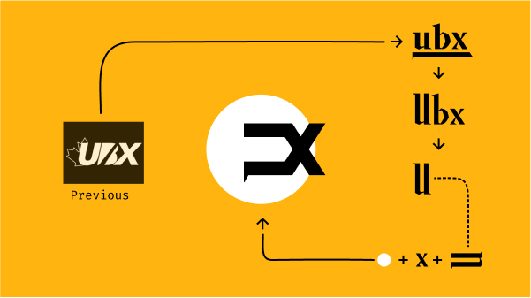

Overview
Personal project based on the creation of images.
Starting point
I created 30 illustrations based on the inktober prompts, exploring some interesting shapes and concepts.
Inspired by diagrams and kitsch, most of the illustrations are iterations and evolutions of the same ideas, evolving and trying to come up with different configurations.
My main purpose was to be consistent during the month and improve my technical skills using Figma.
Execution